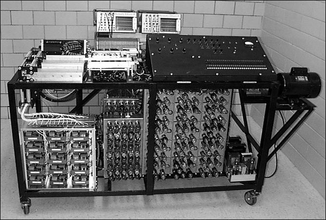

Resumen de la historia de las computadoras
Las computadoras, computadores u ordenadores son las herramientas de
cálculo más eficientes jamás inventadas. Tienen el suficiente poder de
cálculo, autonomía y velocidad de procesamiento para reemplazarnos en
muchas tareas, o permitirnos dinámicas de trabajo que nunca antes en
la historia habían sido posibles, al punto tal de hacerse hoy en día
indispensables.
Estos aparatos se inventaron en el siglo XX, revolucionando para
siempre la manera en que entendemos los procesos industriales, las
comunicaciones, la sociedad y muchas otras áreas de la vida.
Su historia comienza con el primer computador propiamente dicho, cuya
autoría no puede adjudicársele estrictamente a ninguna persona en
solitario. Desde entonces han cambiado enormemente y nos han cambiado
enormemente, por lo que muchos estudiosos consideran su aparición una
Segunda Revolución Industrial o incluso una Revolución Digital.
Antecedentes de la computadora
Los antecedentes de la computadora se remontan al año 4.000 a. C.
cuando se inventaron las primeras máquinas diseñadas para la
aritmética y las primeras reglas de cálculo. Entre ellos se encuentra
el ábaco, un importante adelanto en la materia.
Muy posteriormente se crearon inventos más sofisticados, como la
máquina de Blaise Pascal (conocida como Máquina de Pascal o
Pascalina), creada en 1642. Consistía en una serie de engranajes que
permitían realizar operaciones aritméticas mecánicamente. Al
mejorarla, en 1671 Gottfried Leibniz dio inicio a las primeras
calculadoras, primas cercanas del computador.
En 1802 Joseph Marie Jacquard inventó un sistema de tarjetas
perforadas que le permitiría automatizar sus telares y reducir así la
necesidad de mano de obra. En 1822 fueron la inspiración del inglés
Charles Babbage en la creación de una máquina de cálculo diferencial.
Babbage es «el padre de la computadora» porque en 1834 inventó una
suerte de máquina analítica..
Primera generación (de 1940 a 1952)

La generación inicial de computadores inicia con la invención de las
primeras máquinas de cálculo automáticas, que podían considerarse
propiamente un “computador”. Respondían a la necesidad durante la
Segunda Guerra Mundial de descifrar códigos secretos enemigos. Estaban
basadas electrónicamente en válvulas y tubos al vacío. Podían
programarse mediante un conjunto de instrucciones simples, que debían
suministrarse al sistema a través de tarjetas perforadas de papel o de
cartón, como en el invento de Babbage.
Segunda generación (de 1956 a 1964)

La segunda generación representó un cambio importante, ya que se
sustituyeron las válvulas de vacío por transistores, permitiendo hacer
las máquinas mucho más pequeñas y reduciendo además su consumo
eléctrico. Estas fueron, también, las primeras máquinas en disponer de
un lenguaje de programación, como el célebre FORTRAN. Así, pronto se
hizo obsoleto el sistema de las tarjetas perforadas.
Tercera generación (de 1965 a 1971)

El salto a la tercera generación estuvo determinado por la invención
de los circuitos integrados: permitieron aumentar a capacidad de
procesamiento de las máquinas y por si fuera poco reducir sus costos
de fabricación. Se trataba de circuitos impresos en pastillas de
silicio, con pequeños transistores y semiconductores incorporados.
Este fue el primer paso hacia la miniaturización de las computadoras.
Cuarta generación (de 1972 a 1980)
La paulatina integración de los anteriores componentes electrónicos
propició la aparición de los microprocesadores: nuevos circuitos
integrados que reúnen todos los elementos fundamentales de la
computadora y que empezaron pronto a llamarse chips. Gracias a ellos,
las computadoras podían descentralizar sus operaciones
lógico-aritméticas. Por ejemplo, reemplazar la memoria de anillos de
silicio por memoria de chips, fue un paso importante hacia la
microcomputarización. A esta generación pertenecieron las primeras
computadoras personales o PC.
Quinta generación (de 1983 a 2019)
La generación más reciente y vigente hoy en día, presenció la más
enorme diversificación en el ámbito de la computadora de toda su
historia. Se hizo portátil, liviana y cómoda, e incluso expandió sus
fronteras de uso gracias a la posibilidad de las redes informáticas.
El computador ya ni siquiera necesita estar fijo en una habitación,
sino que puede viajar en nuestros maletines. Nunca antes la velocidad
de procesamiento, la versatilidad y la comodidad convergieron tanto en
el mundo de la computadora, permitiéndole fusionarse con los teléfonos
(dando nacimiento al Smartphone) y con otros muchos formatos
diferentes.